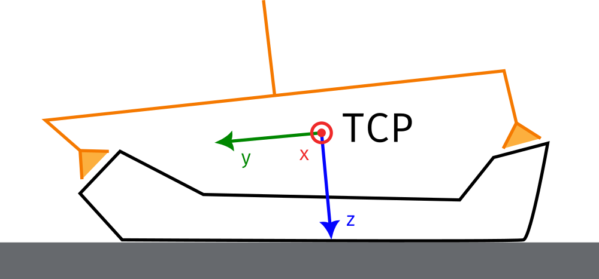
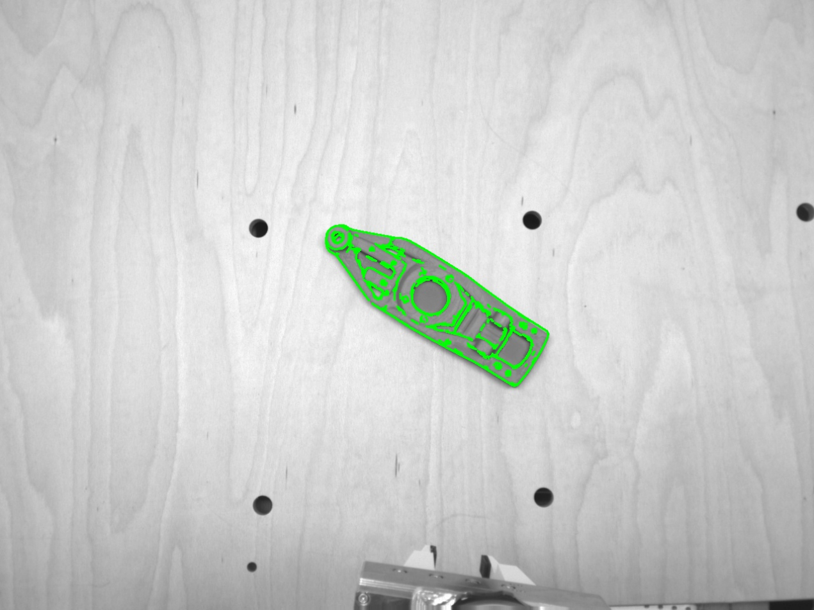
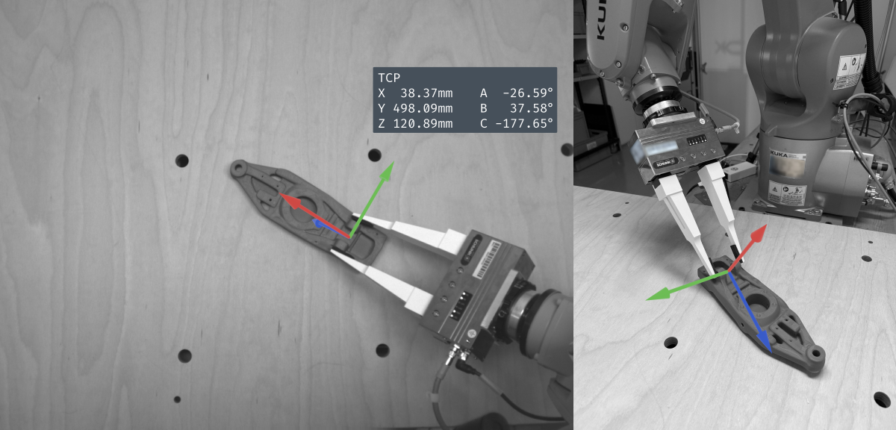
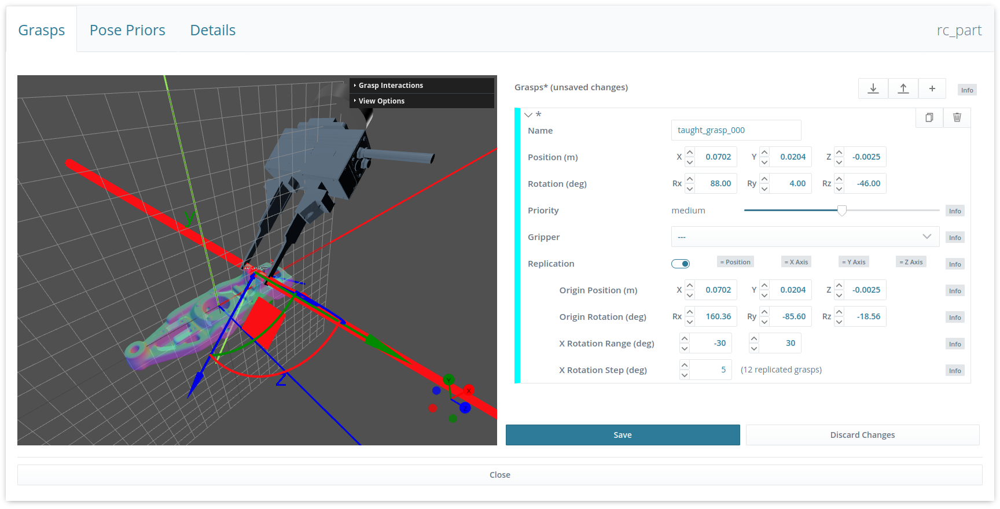

Grasp Teaching¶
General Approach¶
CADMatch grasps are normally defined in the WebGUI, in the same way as in SilhouetteMatch and SilhouetteMatchAI. This is an interactive process: you click on the object surface to place a grasp, then move and rotate it into position. For more details, see Setting of grasp points.
This workflow is sufficient for most use cases. In some situations, however, the accuracy it delivers is not enough. Very long grippers, or grippers that contact the object at multiple distant points, are highly sensitive to rotational errors. For these cases, you can teach grasps using the robot instead.

Fig. 47 An example where placing the grasp through the GUI alone can be tricky: the gripper is very long, and therefore very sensitive to rotational errors. It contacts the object at two distant points, which makes an accurate definition even more important.
Grasp Teaching Using the Robot¶
Note
Before you can teach grasp points, make sure you have completed the Hand-eye calibration and can run detections in the “external” frame.
To teach grasp points using the robot, follow these steps:
Place a single object in the scene so that it is visible to the camera.
Note
If you cannot avoid having multiple objects in the scene, use a region of interest (Region of interest) or a pose prior (Setting of pose priors) to restrict CADMatch to a single object.
Confirm that the CADMatch detections are robust, adjusting the detection parameters if necessary. The grasp teaching service rejects unstable detections.

Fig. 48 Using the TryOut section of the WebGUI, make sure that the object can be detected robustly in the scene
Move the robot so that the gripper is positioned as it would be to pick the object (see Fig. 47). This pose becomes the grasp definition. If this is the first (or only) grasp you are teaching, you can also reposition the object to fit the gripper better.

Fig. 49 Approach the desired grasping pose with the robot, and take note of the TCP pose (see the overlayed frame)
Record this TCP pose, or save it in a variable when running from a robot program. You can optionally pair each pose with a grasp_id.
Note
We provide an example KRL robot program for KUKA robots that teaches grasps using touch-up at our github eki_examples.
Repeat this for every grasp point you want to teach. Once the first pose has been saved, the part must not be moved again.
When you have finished recording TCP poses, move the robot out of the way and call the detect_object_and_teach_grasps CADMatch service. It takes the list of TCP poses (and, optionally, their grasp_ids) and converts them into grasp poses.
When the service finishes successfully, you can rename and edit the grasp points in the WebGUI. There you can also adjust advanced settings such as replication and priority (see Setting of grasp points for more details). Each grasp carries the grasp_id of its corresponding TCP pose; grasps without a custom grasp_id receive a default, numbered ID.

Fig. 50 Once taught, the grasp point can be edited using the WebGUI